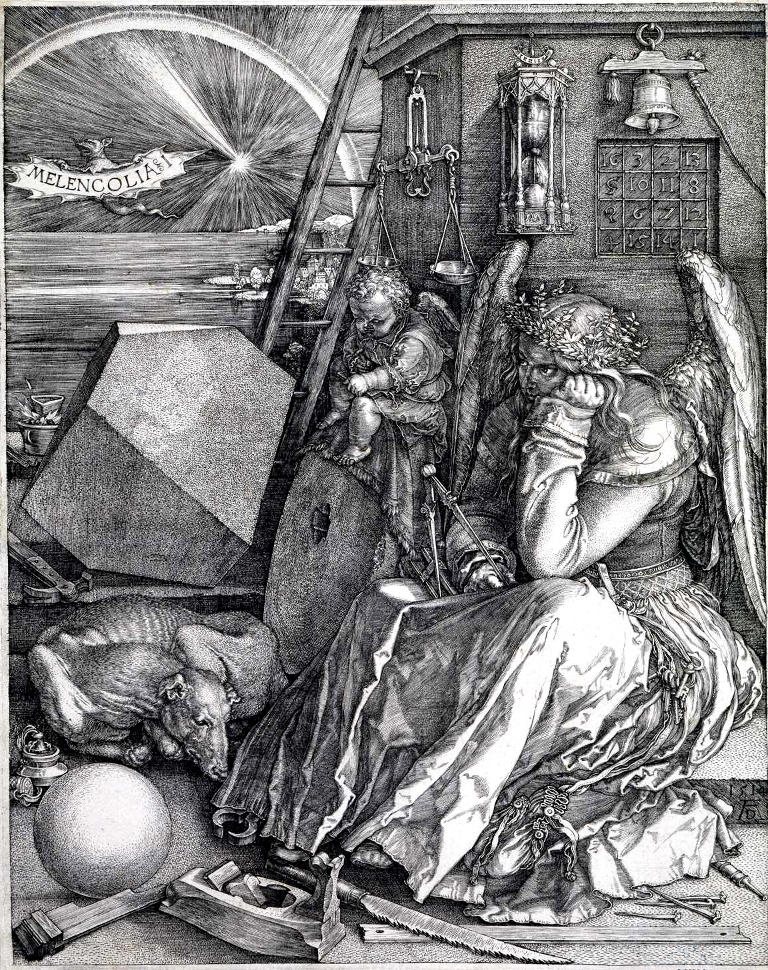
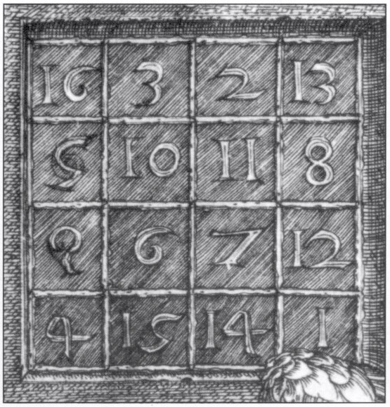
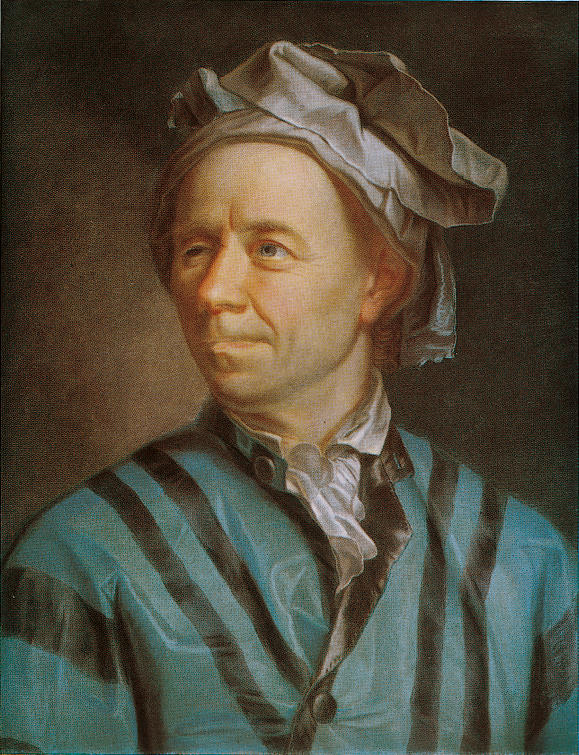
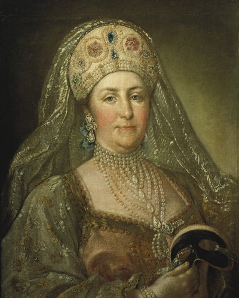
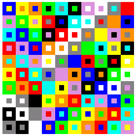

Copyright (c) 2013, 2026 @authorOliver Merkel, Merkel(dot) Oliver(at) web(dot) de.
All rights reserved.
Logos, brands, and trademarks belong to their respective owners.
All source code also including code parts written in HMTL, Javascript, CSS is under MIT License.
The MIT License (MIT)
Copyright (c) 2013, 2026 Oliver Merkel, Merkel(dot) Oliver(at) web(dot)de
Permission is hereby granted, free of charge, to any person obtaining a copy of
this software and associated documentation files (the "Software"), to deal in
the Software without restriction, including without limitation the rights to
use, copy, modify, merge, publish, distribute, sublicense, and/or sell copies of
the Software, and to permit persons to whom the Software is furnished to do so,
subject to the following conditions:
The above copyright notice and this permission notice shall be included in all
copies or substantial portions of the Software.
THE SOFTWARE IS PROVIDED "AS IS", WITHOUT WARRANTY OF ANY KIND, EXPRESS OR
IMPLIED, INCLUDING BUT NOT LIMITED TO THE WARRANTIES OF MERCHANTABILITY, FITNESS
FOR A PARTICULAR PURPOSE AND NONINFRINGEMENT. IN NO EVENT SHALL THE AUTHORS OR
COPYRIGHT HOLDERS BE LIABLE FOR ANY CLAIM, DAMAGES OR OTHER LIABILITY, WHETHER
IN AN ACTION OF CONTRACT, TORT OR OTHERWISE, ARISING FROM, OUT OF OR IN
CONNECTION WITH THE SOFTWARE OR THE USE OR OTHER DEALINGS IN THE SOFTWARE.
1. Open New... to start a fresh puzzle with randomized color-pair tiles.
2. Choose puzzle size n in Options. The game uses an n x n grid.
3. Drag a tile and drop it near any board cell. It snaps if that cell is free.
4. You can pick up and move tiles that were already snapped.
5. A solved puzzle requires all cells filled and uniqueness in every row and column:
- Outer colors must not repeat within a row or within a column.
- Inner colors must not repeat within a row or within a column.
What is an Euler Square?
An Euler square, also known as a Graeco-Latin square or orthogonal Latin square pair, is a mathematical construction first studied by the Swiss mathematician Leonhard Euler in the 18th century.
Definition
An Euler square of order n consists of an n × n grid where each cell contains a pair of symbols (represented here as two colors: outer and inner). The arrangement must satisfy the following rules:
Each outer color appears exactly once in each row and once in each column.
Each inner color appears exactly once in each row and once in each column.
Each pair of colors appears exactly once in the entire grid.
Historical Context
Euler conjectured in 1779 that no such squares could exist for certain orders (specifically, orders of the form 4k + 2). His conjecture stood for over 150 years until it was disproven in the 1950s by Bose, Parker, and Shrikhande. Today, Euler squares are known to exist for all orders greater than or equal to 2, except for order 2 and order 6.
Applications
Euler squares have applications in experimental design, cryptography, and combinatorics. They are closely related to Latin squares, which are fundamental structures in combinatorial mathematics.
Magic Squares
Mind that this background information section most likely
contains spoilers.
While this application is mixed licensed
the basic idea of magic squares is in the public domain. A famous sample
which is by far not the first magic square mentioned is an engraving
called Melencolia § I by Albrecht Dürer. The magic square can
be found in the upper right of the engraving's print.
It is no real challenge to find even older magic squares
mentioned elsewhere.

Melencolia § I by Albrecht Dürer [Public domain],
1514, Anhaltische Gemäldegalerie, Dessau, Germany, via Wikimedia Commons
Anyway it is definitively a beautiful sample to understand that aesthetics
in search of perfection meets the language of mathematics and vice versa.
Remarkable that most likely by instance the lower middle two squares of the
magic square match the year of the engraving's creation.

Magic square in Melencolia § I by Albrecht Dürer [Public domain],
1514, Anhaltische Gemäldegalerie, Dessau, Germany, via Wikimedia Commons
Besides that the magic behind Dürer's square is that the row sums,
column sums, and the diagonal sums are equal.
The magic squares found in this application are of different sizes.
The size equals the width in tiles. So if it is 8 tiles wide and high the
square has 64 positions. Each unique tile has two attributes as of inner
color and outer color. The amount of colors in the color palette used equals
the size of the square.
Now if instead of a color set you will use the natural numbers in
sequence beginning from 1 then the squares here can easily be transformed
into squares like the type of square used by Dürer. That could
already be the first spoiler. How to get these numbers easily? After
substitution of colors by numbers simply multiply the outer attribute's
number by the size of the square and add the inner attribute's number.
Et voilà...
This should fairly be still complex enough not spoiling everything,
I do hope.
Graeco Latin Squares
The principle of overlaying two independed magic squares calling
them orthogonal (with representation of an outer and an inner color in
this game) has been well-known before Leonhard Euler dealt with the
related challenges. In literature these are referenced as Graeco Latin
squares. Often Latin letters and Greek letters have been used to
represent the two attributes (here inner and outer color).
If you deal with just one type of attribute thus ignoring
the other a specific related group of magic squares is called Latin
squares then.
Leonard Euler's achievement — again in the public
domain — is that he analyzed the method to solve such Graeco
Latin squares and came up with a conjecture on Graeco Latin squares.
The assumption basically has been that Graeco Latin squares sized
2+4⋅n ∀ n∈N (squares sized 2x2, 6x6, 10x10, et cetera)
can not be solved.

Leonhard Euler by Jakob Emanuel Handmann [Public domain],
1753, Kunstmuseum Basel, via Wikimedia Commons
There exists some legend about Catherine the Great asking Leonhard Euler
to find a solution to arrange 36 officers of six different ranks each rank from
six different regiments. Obviously the question is if the officers can be arranged
such that each rank and regiment is represented exactly once per row and per
column in a 6 times 6 square.

Catherine II, the Great, anonymous, after Stefano Torelli [Public domain],
approx. 1780, via Wikimedia Commons
Back to the popular 10x10 version. Until mankind had at least a
published final proof on Euler's conjecture approximately
180 years and several publications dealing with the conjecture over and over
again went by. R.C. Bose, S.S. Shrikhande, and E.T. Parker published a
paper to proof Euler's conjecture to be incorrect on sizes 2+4⋅n ≥ 10
in 1960.
If not performing a hard mathematical proof but simple testing to find
solutions: approximately 15 years ago an average computer has been able
to render a single 10x10 solution for the square in a few seconds.
I personally have been able so far a few times in my life to
solve 10x10 manually, too. Although I have to admit that knowledge on
a certain existing symmetry or patterns of a specific solution
is indeed quite helpful. So do not look to close onto any solution
if you still want to solve it from scratch completely on your own.
But it is normal to experience that the puzzle is really a
braintwister and mindbender for sure then.
For those who solved it already: How many solutions are there in total?

Own solution on size 10x10. Did you recognize the 3x3
square in the lower left and the remaining diagonal from lower left
to upper right here?
I heard about the puzzle for the first time from some guy who pointed
me to a print article published in Scientific American / Spektrum
der Wissenschaft magazine. By the way: Thank you, Robert!
Scientific American (or German publisher Spektrum der Wissenschaft)
used to offer a magnetic board with squared colored tiles to solve the
magic square puzzle. In case of looking if it is in stock anywhere then
remember its name. In German it has been called 'Gewonnen, Herr Euler!'
A great puzzle and lovely decoration to recommend, btw.
Feel free to give hints and feedback! You are welcome.